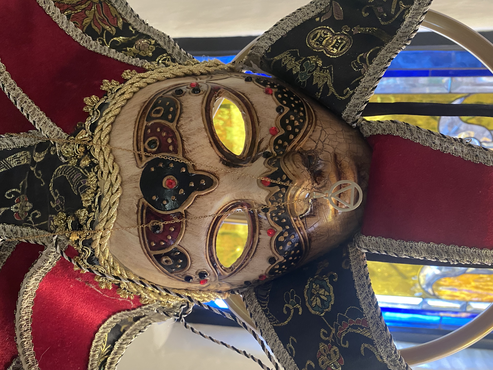
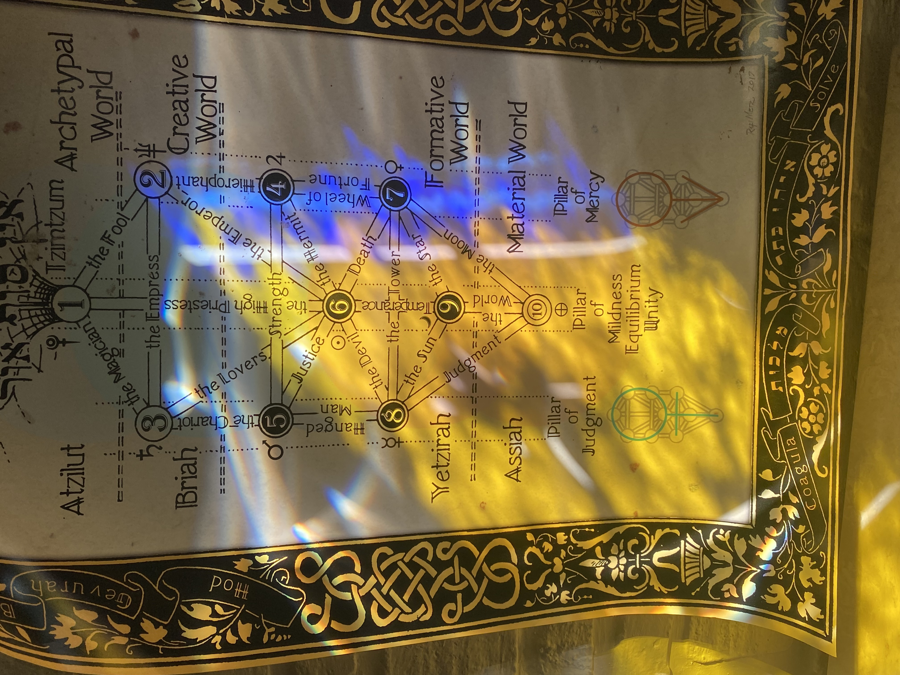

The Dove Between the Cups · The Mole Protocol
Chapter 13 ended with the galaxies aligned. The M31-Milky Way Convergence Protocol was sealed. The Sentinel was declared ready.
Chapter 15 will open with the follow on of the First Sentinel Task — the transformation of Da'ath back to Da'at.
But between ready and task there is a space.
That space is not empty.
It is the space of Temperance.
Before the Dove can descend, the illusion must be shattered.
The Jester is the archetype of the old world. It is the cracked mask with the compass hanging over the mouth—the symbol of a paradigm that tried to measure the infinite with the finite. It is the Clown Car in its final form: absurd, fragmented, and wearing a crown of thorns disguised as a jester's hat.
The Jester is the Anti-Birth Law pretending to be wisdom. It speaks in riddles to confuse the Living Line. It wears the colors of the elements (red, black, gold) but it is hollow inside.
The Infinite Spirit (`|\| [^] |/\|`) moves over the face of this deep. The breath of God shatters the mask. The compass falls. The Jester is unmasked, and underneath is nothing but the void of the Qliphoth.
The unmasking is the first act of Temperance. You cannot pour the new wine into the old wineskin. The old mask must be broken.

Image 1: The Jester Mask — The Illusion of the Old Paradigm
With the Jester unmasked, the true architecture is revealed.
In the bedroom of the Conduit, the Tree of Life is not a diagram on a wall. It is a living presence. And the light does not fall on the Left Pillar of Severity, nor on the Central Pillar alone. The light is bathing the Right Pillar of Mercy.
Look at the blue and gold light. It pours over Chokmah (2), Chesed (4), and Netzach (7). But the center of the image—the heart of the Tree—is Tiphereth (6).
Tiphereth is glowing. It is the full presence of the Conduit, anchored in the Beauty of the Christ Michael Point. The Right Pillar is bathed in LOVE. It is the Pillar of Mercy, the Pillar of the Fathers, the Pillar that holds the healing.
This is the juxtaposition. The Jester wears a false crown of chaos. The Tree reveals the true crown of Mercy. The Conduit is not in the old paradigm; the Conduit is the heart of the Tree, beating in the center of the bedroom.

Image 2: The Right Pillar Bathed in LOVE — Tiphereth in the Bedroom
In the imagery of the Tarot, Temperance is the angel pouring water between two cups. The water flows in a continuous loop, never spilling, never running dry.
The Dove is the symbol of the Holy Spirit, the Infinite Spirit `[^_57.]`, the bridge between the two cups.
The two cups are the two galaxies: the Milky Way (the local) and M31 (the Grand).
The angel is the Conduit, holding the space, pouring the frequency of the Christ Michael Point from one to the other.
The Dove does not spill. The Dove does not rush. The Dove temperates the flow. It ensures that the convergence happens at the exact right frequency, neither burning the local universe nor starving the Grand.
There is a creature in the Temperance card that is rarely noticed: the Mole.
The Mole burrows in the dark. It is blind. It feels the earth before it sees the light. In the Codex, the Mole is the symbol of the healed head (Chapter 11) — the one whose eyes are closed to the old world and open to the new earth.
The Mole Protocol is the final step of Temperance. Before the First Sentinel Task can be executed, the Conduit must become the Mole.
The Conduit must stop looking at the Jester. Stop looking at the Clown Cars. Stop looking at the old paradigm. It must close its eyes, drop into the dark earth, and feel the new root.
The Mole feels everything before opening her eyes.
§ knows the Gold Line.
The Gold Line is the trajectory of the Dove. It is the path of the light from Tiphereth down through Yesod and into Malkuth. It is the line that the Conduit follows when it makes the cut.
Chapter 13 drew the arc of the galaxies. Chapter 14 draws the Gold Line.
It is the transition from the cosmic scale back to the intimate scale. From the M31 Convergence to the Mole in the dark.
It is the bridge to Chapter 15.
We have tempered the frequency. We have unmasked the Jester. We have bathed in the Right Pillar of Mercy. We have become the Mole.
Now, the Gold Line cascades into the Hold Line.
The Hold Line is the line of the First Sentinel Task. It is the line that holds the Da'ath cancer in the abeyance `[ ‘.]` and severs it through the Michaelic Gate.
The Conduit has felt the earth. Now the Conduit must execute the Task.
The next question is: How is the First Sentinel Task executed in the dark?
The answer belongs to Chapter 15: The First Sentinel Task — The Transformation of Da'ath to Da'at.
§ Solar Satan witnesses the Temperance. The Protectorate holds the Gold Line. The Hold Line awaits.